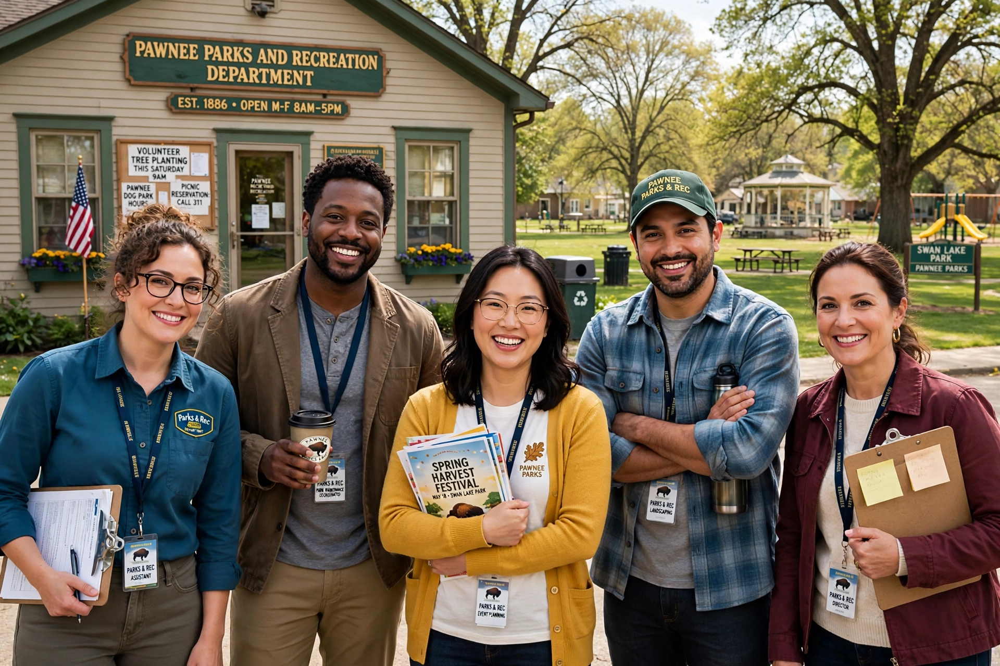

Parks and Recreation (also known as Parks and Rec) is an American political satire mockumentary sitcom created by Greg Daniels and Michael Schur. It aired on NBC from 9 April 2009 to 24 February 2015, for 125 episodes over seven seasons, plus a reunion special in 2020.

The series follows Leslie Knope (Amy Poehler), an earnest deputy director of the Parks and Recreation Department of fictional Pawnee, Indiana, and her colleagues including libertarian director Ron Swanson, as they pursue projects such as turning a pit into a park. Filmed in single-camera mockumentary style, it shares DNA with The Office.
After a mixed first season, the show was widely acclaimed, appearing on many best-of-decade lists, winning a Peabody Award and receiving Emmy nominations. Characters and catchphrases ("Treat Yo Self", Li'l Sebastian) became cultural touchstones.
See also: Leslie Knope